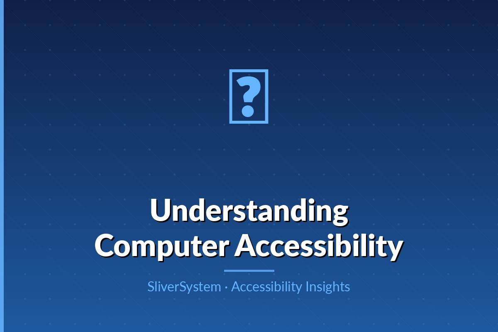

How to include disabled participants and turn insights into product decisions.

Teams often design for hypothetical users, which leads to blind spots. Inclusive research brings lived experience into decision-making. Participants with disabilities can reveal blockers that automated tools miss, such as confusing language, workflow friction, or inaccessible support channels. These findings often improve usability for all users.
Recruitment should intentionally include diverse disability profiles, devices, and assistive technologies. Partner with community organizations and provide clear participation requirements. Compensation should reflect participant expertise and time. Accessibility support—captions, interpreters, flexible scheduling—must be planned and budgeted from the start.
Research materials, consent forms, prototypes, and interview platforms must be accessible themselves. If participants cannot access the session setup, results are biased before testing begins. Provide multiple communication options and offer accommodations proactively. Respectful logistics improve data quality and participant trust.
Research insights should translate into actionable product backlog items with severity and user-impact context. Avoid summarizing findings as generic suggestions. Tie each issue to task outcomes, such as failure to complete payment or inability to submit assignments. This helps stakeholders prioritize accessibility work alongside other product goals.
One-time studies are useful but insufficient. Establish recurring accessibility research checkpoints across discovery, design, and post-release phases. Share findings across teams and maintain a repository of patterns and known issues. Continuous engagement prevents regressions and keeps products aligned with real user needs.
Accessible products are built when design, engineering, content, and research teams treat inclusion as a shared responsibility from day one.